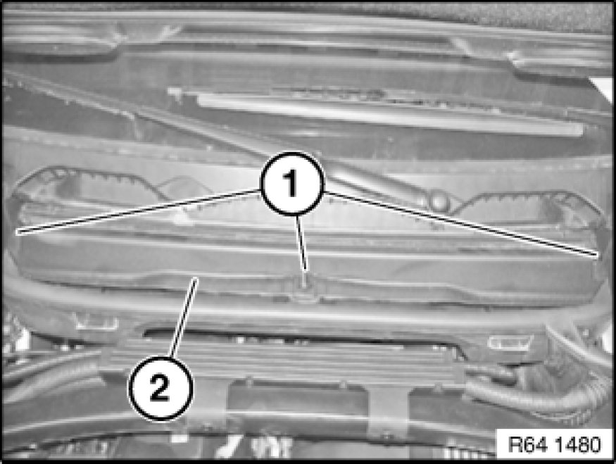

Replacing Microfilter for Interior Ventilation
64 31 010 - Replacing microfilter for interior ventilation

Important!
Risk of damage!
A/C system must not be operated without the prescribed filter element.

Note on cleaning:
Spray microfilter housing from inside with BMW pollen filter housing cleaner* (observe instructions for use).
Wipe away excess liquid.
This kills off germs, bacteria and fungi that cause smells.
The smell that results on the plastic parts of the microfilter housing is eliminated.
*BMW part number: 0 447 913

Unlock rotary catches (1), raise cover (2) and remove microfilter element.